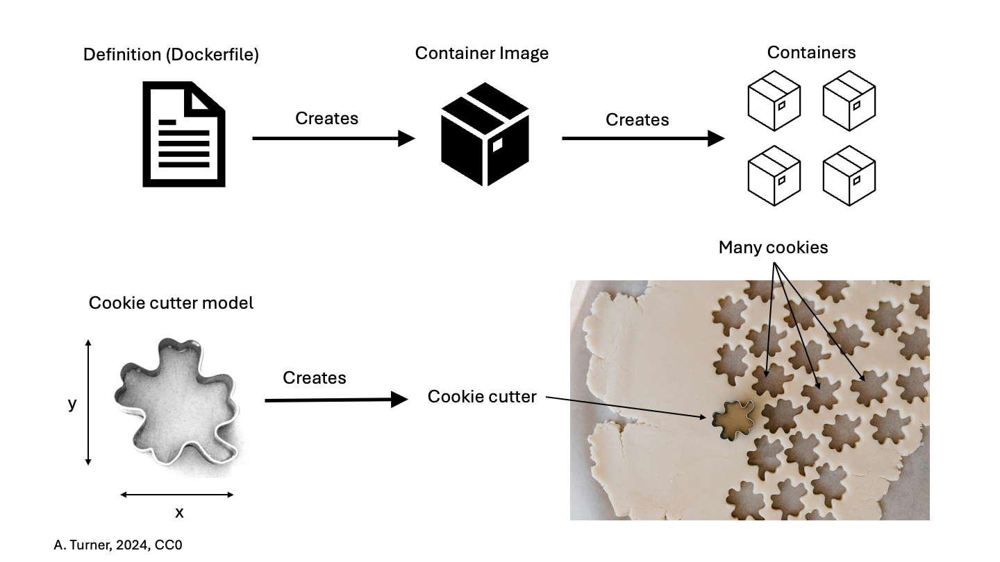

All in One View
Content from Introducing Containers
Last updated on 2026-06-17 | Edit this page
Overview
Questions
- What are containers, and why might they be useful to me?
Objectives
- Show how software depending on other software leads to configuration management problems.
- Identify the problems that software installation can pose for research.
- Explain the advantages of containerization.
- Explain how using containers can solve software configuration problems
Learning about software containers
The Australian Research Data Commons has produced a short introductory video about containers that covers many of the points below. Watch it before or after you go through this section to reinforce your understanding!
How can software containers help your research?
Australian Research Data Commons, 2021. How can software containers help your research?. [video] Available at: https://www.youtube.com/watch?v=HelrQnm3v4g DOI: http://doi.org/10.5281/zenodo.5091260
Scientific Software Challenges
What’s Your Experience?
Take a minute to think about challenges that you have experienced in using scientific software (or software in general!) for your research. Then, share with your neighbors and try to come up with a list of common gripes or challenges.
What is a software dependency?
We will mention software dependencies a lot in this section of the workshop so it is good to clarify this term up front. A software dependency is a relationship between software components where one component relies on the other to work properly. For example, if a software application uses a library to query a database, the application depends on that library.
You may have come up with some of the following:
- you want to use software that doesn’t exist for the operating system (Mac, Windows, Linux) you’d prefer.
- you struggle with installing a software tool because you have to install a number of other dependencies first. Those dependencies, in turn, require other things, and so on (i.e. combinatoric explosion).
- the software you’re setting up involves many dependencies and only a subset of all possible versions of those dependencies actually works as desired.
- you’re not actually sure what version of the software you’re using because the install process was so circuitous.
- you and a colleague are using the same software but get different results because you have installed different versions and/or are using different operating systems.
- you installed everything correctly on your computer but now need to install it on a colleague’s computer/campus computing cluster/etc.
- you’ve written a package for other people to use but a lot of your users frequently have trouble with installation.
- you need to reproduce a research project from a former colleague and the software used was on a system you no longer have access to.
A lot of these characteristics boil down to one fact: the main program you want to use likely depends on many, many, different other programs (including the operating system!), creating a very complex, and often fragile system. One change or missing piece may stop the whole thing from working or break something that was already running. It’s no surprise that this situation is sometimes informally termed dependency hell.
Software and Science
Again, take a minute to think about how the software challenges we’ve discussed could impact (or have impacted!) the quality of your work. Share your thoughts with your neighbors. What can go wrong if our software doesn’t work?
Unsurprisingly, software installation and configuration challenges can have negative consequences for research:
- you can’t use a specific tool at all, because it’s not available or installable.
- you can’t reproduce your results because you’re not sure what tools you’re actually using.
- you can’t access extra/newer resources because you’re not able to replicate your software set up.
- others cannot validate and/or build upon your work because they cannot recreate your system’s unique configuration.
Thankfully there are ways to get underneath (a lot of) this mess: containers to the rescue! Containers provide a way to package up software dependencies and access to resources such as files and communications networks in a uniform manner.
What is a Container?
Imagine you want to install some research software but don’t want to take the chance of making a mess of your existing system by installing a bunch of additional stuff (libraries/dependencies/etc.). You don’t want to buy a whole new computer because it’s too expensive. What if, instead, you could have another independent filesystem and running operating system that you could access from your main computer, and that is actually stored within this existing computer?
More concretely, Docker Inc use the following definition of a container:
A container is a standard unit of software that packages up code and all its dependencies so the application runs reliably from one computing environment to another.
https://www.docker.com/resources/what-container/
The term container can be usefully considered with reference to shipping containers. Before shipping containers were developed, packing and unpacking cargo ships was time consuming and error prone, with high potential for different clients’ goods to become mixed up. Just like shipping containers keep things together that should stay together, software containers standardize the description and creation of a complete software system: you can drop a container into any computer with the container software installed (the ‘container host’), and it should just work.
Virtualization
Containers are an example of what’s called virtualization – having a second virtual computer running and accessible from a main or host computer. Another example of virtualization are virtual machines or VMs. A virtual machine typically contains a whole copy of an operating system in addition to its own filesystem and has to get booted up in the same way a computer would. A container is considered a lightweight version of a virtual machine; underneath, the container is (usually) using the Linux kernel and simply has some flavour of Linux + the filesystem inside.
What is Podman?
Podman is a tool that allows you to build and run containers. It’s not the only tool that can create containers, but is the one we’ve chosen for this workshop.
Container Images
One final term: while the container is an alternative filesystem layer that you can access and run from your computer, the container image is the ‘recipe’ or template for a container. The container image has all the required information to start up a running copy of the container. A running container tends to be transient and can be started and shut down. The container image is more long-lived, as a definition for the container. You could think of the container image like a cookie cutter – it can be used to create multiple copies of the same shape (or container) and is relatively unchanging, where cookies come and go. If you want a different type of container (cookie) you need a different container image (cookie cutter).

Putting the Pieces Together
Think back to some of the challenges we described at the beginning. The many layers of scientific software installations make it hard to install and re-install scientific software – which ultimately, hinders reliability and reproducibility.
But now, think about what a container is – a self-contained, complete, separate computer filesystem. What advantages are there if you put your scientific software tools into containers?
This solves several of our problems:
- documentation – there is a clear record of what software and software dependencies were used, from bottom to top.
- portability – the container can be used on any computer that has a compliant container runtime such as Podman or Docker installed – it doesn’t matter whether the computer is Mac, Windows or Linux-based.
- reproducibility – you can use the exact same software and environment on your computer and on other resources (like a large-scale computing cluster).
- configurability – containers can be sized to take advantage of more resources (memory, CPU, etc.) on large systems (clusters) or less, depending on the circumstances.
The rest of this workshop will show you how to download and run containers from pre-existing container images on your own computer, and how to create and share your own container images.
Use cases for containers
Now that we have discussed a little bit about containers – what they do and the issues they attempt to address – you may be able to think of a few potential use cases in your area of work. Some examples of common use cases for containers in a research context include:
- Using containers solely on your own computer to use a specific software tool or to test out a tool (possibly to avoid a difficult and complex installation process, to save your time or to avoid dependency hell).
- Creating a
DockerfileorContainerfilethat generates a container image with software that you specify installed, then sharing a container image generated using this file with your collaborators for use on their computers or a remote computing resource (e.g. cloud-based or HPC system). - Archiving the container images so you can repeat analysis/modelling using the same software and configuration in the future – capturing your workflow.
- Almost all software depends on other software components to function, but these components have independent evolutionary paths.
- Small environments that contain only the software that is needed for a given task are easier to replicate and maintain.
- Critical systems that cannot be upgraded, due to cost, difficulty, etc. need to be reproduced on newer systems in a maintainable and self-documented way.
- Virtualization allows multiple environments to run on a single computer.
- Containerization improves upon the virtualization of whole computers by allowing efficient management of the host computer’s memory and storage resources.
- Containers are built from ‘recipes’ that define the required set of software components and the instructions necessary to build/install them within a container image.
- Podman is just one software platform that can create containers and the resources they use.
Content from Introducing the Podman Command Line
Last updated on 2026-06-17 | Edit this page
Overview
Questions
- How do I know Podman is installed and running?
- How do I interact with Podman?
Objectives
- Explain how to check that Podman is installed and is ready to use.
- Demonstrate some initial Podman command line interactions.
- Use the built-in help for Podman commands.
Podman command line
Start the Podman application that you installed in working through the setup instructions for this session. Note that this might not be necessary if your laptop is running Linux or if the installation added the Podman application to your startup process.
You may need to login to Docker Hub
The Podman Desktop application will usually provide a way for you to log in to the Docker Hub via the ‘Settings’ menu followed by ‘Registries’ and then ‘Configure’ under the Docker Hub entry. It is usually convenient to do this when the application starts. This will require you to use your Docker Hub username and your password. We will not actually require access to the Docker Hub until later in the course but if you can login now, you should do so.
Determining your Docker Hub username
If you no longer recall your Docker Hub username, e.g., because you have been logging into the Docker Hub using your email address, you can find out what it is through the steps:
- Open https://hub.docker.com/ in a web browser window
- Sign-in using your email and password (don’t tell us what it is)
- In the top-right of the screen you will see your username
Once your Podman application is running, open a shell (terminal) window, and run the following command to check that Podman is installed and the command line tools are working correctly. Below is the output for a Mac version, but the specific version is unlikely to matter much: it does not have to precisely match the one listed below.
OUTPUT
podman version 5.4.2The above command has not actually relied on the part of Podman that runs containers, just that Podman is installed and you can access it correctly from the command line.
A command that checks that Podman is working correctly is the
podman container ls command (we cover this command in more
detail later in the course).
Without explaining the details, output on a newly installed system would likely be:
OUTPUT
CONTAINER ID IMAGE COMMAND CREATED STATUS PORTS NAMES(The command podman system info could also be used to
verify that Podman is correctly installed and operational but it
produces a larger amount of output.)
However, if you instead get a message similar to the following
OUTPUT
Cannot connect to Podman. Please verify your connection to the Linux system using `podman system connection list`, or try `podman machine init` and `podman machine start` to manage a new Linux VM
Error: unable to connect to Podman socket: failed to connect: dial tcp 127.0.0.1:63249: connect: connection refusedthen you need to check that you have started the Podman Desktop application or Podman Machine or however else you worked through the setup instructions.
Getting help
Often when working with a new command line tool, we need to get help.
These tools often have some sort of subcommand or flag (usually
help, -h, or --help) that
displays a prompt describing how to use the tool. For Podman, it’s no
different. If we run podman --help, we see the following
output (running podman also produces the help message):
OUTPUT
Manage pods, containers and images
Usage:
podman [options] [command]
Available Commands:
attach Attach to a running container
build Build an image using instructions from Containerfiles
commit Create new image based on the changed container
compose Run compose workloads via an external provider such as docker-compose or podman-compose
container Manage containers
cp Copy files/folders between a container and the local filesystem
create Create but do not start a container
diff Display the changes to the object's file system
events Show podman system events
exec Run a process in a running container
export Export container's filesystem contents as a tar archive
farm Farm out builds to remote machines
generate Generate structured data based on containers, pods or volumes
healthcheck Manage health checks on containers
help Help about any command
history Show history of a specified image
image Manage images
images List images in local storage
import Import a tarball to create a filesystem image
info Display podman system information
init Initialize one or more containers
inspect Display the configuration of object denoted by ID
kill Kill one or more running containers with a specific signal
kube Play containers, pods or volumes from a structured file
load Load image(s) from a tar archive
login Log in to a container registry
logout Log out of a container registry
logs Fetch the logs of one or more containers
machine Manage a virtual machine
manifest Manipulate manifest lists and image indexes
network Manage networks
pause Pause all the processes in one or more containers
pod Manage pods
port List port mappings or a specific mapping for the container
ps List containers
pull Pull an image from a registry
push Push an image to a specified destination
rename Rename an existing container
restart Restart one or more containers
rm Remove one or more containers
rmi Remove one or more images from local storage
run Run a command in a new container
save Save image(s) to an archive
search Search registry for image
secret Manage secrets
start Start one or more containers
stats Display a live stream of container resource usage statistics
stop Stop one or more containers
system Manage podman
tag Add an additional name to a local image
top Display the running processes of a container
unpause Unpause the processes in one or more containers
untag Remove a name from a local image
update Update an existing container
version Display the Podman version information
volume Manage volumes
wait Block on one or more containers
Options:
--config string Location of authentication config file
-c, --connection string Connection to use for remote Podman service (CONTAINER_CONNECTION) (default "podman-machine-default-root")
--help Help for podman
--identity string path to SSH identity file, (CONTAINER_SSHKEY) (default "/Users/william/.local/share/containers/podman/machine/machine")
--log-level string Log messages above specified level (trace, debug, info, warn, warning, error, fatal, panic) (default "warn")
--out string Send output (stdout) from podman to a file
--ssh string define the ssh mode (default "golang")
--storage-opt stringArray Used to pass an option to the storage driver
--url string URL to access Podman service (CONTAINER_HOST) (default "ssh://root@127.0.0.1:63249/run/podman/podman.sock")
-v, --version version for podmanWe can view further help on the individual Podman commands by adding
--help to that command. For example, take the
podman container ls command that we ran previously. We can
see from the Podman help prompt that container is a Podman
command, so to get help for that command, we run:
OUTPUT
Manage containers
Description:
Manage containers
Usage:
podman container [command]
Available Commands:
attach Attach to a running container
checkpoint Checkpoint one or more containers
clone Clone an existing container
commit Create new image based on the changed container
cp Copy files/folders between a container and the local filesystem
create Create but do not start a container
diff Inspect changes to the container's file systems
exec Run a process in a running container
exists Check if a container exists in local storage
export Export container's filesystem contents as a tar archive
init Initialize one or more containers
inspect Display the configuration of a container
kill Kill one or more running containers with a specific signal
list List containers
logs Fetch the logs of one or more containers
pause Pause all the processes in one or more containers
port List port mappings or a specific mapping for the container
prune Remove all non running containers
ps List containers
rename Rename an existing container
restart Restart one or more containers
restore Restore one or more containers from a checkpoint
rm Remove one or more containers
run Run a command in a new container
start Start one or more containers
stats Display a live stream of container resource usage statistics
stop Stop one or more containers
top Display the running processes of a container
unpause Unpause the processes in one or more containers
update Update an existing container
wait Block on one or more containersThere’s also help for the container ls command:
OUTPUT
List containers
Description:
Prints out information about the containers
Usage:
podman container list [options]
Aliases:
list, ls
Examples:
podman container list -a
podman container list -a --format "{{.ID}} {{.Image}} {{.Labels}} {{.Mounts}}"
podman container list --size --sort names
Options:
-a, --all Show all the containers, default is only running containers
--external Show containers in storage not controlled by Podman
-f, --filter stringArray Filter output based on conditions given
--format string Pretty-print containers to JSON or using a Go template
-n, --last int Print the n last created containers (all states) (default -1)
--no-trunc Display the extended information
--noheading Do not print headers
--ns Display namespace information
-p, --pod Print the ID and name of the pod the containers are associated with
-q, --quiet Print the numeric IDs of the containers only
-s, --size Display the total file sizes
--sort choice Sort output by: command, created, id, image, names, runningfor, size, status
--sync Sync container state with OCI runtime
-w, --watch uint Watch the ps output on an interval in secondsYou may notice that there are many commands that stem from the
podman command. Instead of trying to remember all possible
commands and options, it’s better to learn how to effectively get help
from the command line. Although we can always search the web, getting
the built-in help from our tool is often much faster and may provide the
answer right away. This applies not only to Podman, but also to most
command line-based tools.
Podman Command Line Interface (CLI) syntax
In this lesson we use the CLI syntax introduced
with the Docker Engine version 1.13. This new syntax combines
commands into groups you will most often want to interact with. In the
help example above you can see image and
container management commands, which can be used to
interact with your images and containers respectively. With this new
syntax you issue commands using the following pattern
podman [command] [subcommand] [additional options]
Comparing the output of two help commands above, you can see that the
same thing can be achieved in multiple ways. For example to start a
container using the old syntax you would use podman run. To
achieve the same with the new syntax, you use
podman container run instead. Even though the old approach
is shorter and still officially supported, the new syntax is more
descriptive, less error-prone and is therefore recommended.
Exploring a command
Run podman --help and pick a command from the list.
Explore the help prompt for that command. Try to guess how a command
would work by looking at the Usage: section of the
prompt.
Suppose we pick the podman image build command:
OUTPUT
Build an image using instructions from Containerfiles
Description:
Builds an OCI or Docker image using instructions from one or more Containerfiles and a specified build context directory.
Usage:
podman image build [options] [CONTEXT]
Examples:
podman image build .
podman image build --creds=username:password -t imageName -f Containerfile.simple .
podman image build --layers --force-rm --tag imageName .
Options:
--add-host host:ip add a custom host-to-IP mapping (host:ip) (default [])
--all-platforms attempt to build for all base image platforms
--annotation stringArray set metadata for an image (default [])
--arch string set the ARCH of the image to the provided value instead of the architecture of the host (default "arm64")
--authfile string path of the authentication file.
--build-arg argument=value argument=value to supply to the builder
--build-arg-file argfile.conf argfile.conf containing lines of argument=value to supply to the builder
--build-context argument=value argument=value to supply additional build context to the builder
--cache-from stringArray remote repository list to utilise as potential cache source.
--cache-to stringArray remote repository list to utilise as potential cache destination.
--cache-ttl string only consider cache images under specified duration.
--cap-add strings add the specified capability when running (default [])
--cap-drop strings drop the specified capability when running (default [])
--cert-dir string use certificates at the specified path to access the registry
--cgroup-parent string optional parent cgroup for the container
--cgroupns string 'private', or 'host'
--compat-volumes preserve the contents of VOLUMEs during RUN instructions
--cpp-flag stringArray set additional flag to pass to C preprocessor (cpp)
--cpu-period uint limit the CPU CFS (Completely Fair Scheduler) period
--cpu-quota int limit the CPU CFS (Completely Fair Scheduler) quota
-c, --cpu-shares uint CPU shares (relative weight)
--cpuset-cpus string CPUs in which to allow execution (0-3, 0,1)
--cpuset-mems string memory nodes (MEMs) in which to allow execution (0-3, 0,1). Only effective on NUMA systems.
--created-annotation set an "org.opencontainers.image.created" annotation in the image (default true)
--creds [username[:password]] use [username[:password]] for accessing the registry
--decryption-key strings key needed to decrypt the image
--device stringArray additional devices to provide
-D, --disable-compression don't compress layers by default (default true)
--dns /etc/resolv.conf set custom DNS servers or disable it completely by setting it to 'none', which prevents the automatic creation of /etc/resolv.conf.
--dns-option strings set custom DNS options
--dns-search strings set custom DNS search domains
--env stringArray set environment variable for the image
-f, --file pathname or URL pathname or URL of a Dockerfile
--force-rm always remove intermediate containers after a build, even if the build is unsuccessful. (default true)
--format format format of the built image's manifest and metadata. Use BUILDAH_FORMAT environment variable to override. (default "oci")
--from string image name used to replace the value in the first FROM instruction in the Containerfile
--group-add strings add additional groups to the primary container process. 'keep-groups' allows container processes to use supplementary groups.
--hooks-dir stringArray set the OCI hooks directory path (may be set multiple times)
--http-proxy pass through HTTP Proxy environment variables (default true)
--identity-label add default identity label (default true)
--ignorefile string path to an alternate .dockerignore file
--iidfile file file to write the image ID to
--inherit-annotations inherit the annotations from the base image or base stages. (default true)
--inherit-labels inherit the labels from the base image or base stages. (default true)
--ipc path 'private', path of IPC namespace to join, or 'host'
--isolation type type of process isolation to use. Use BUILDAH_ISOLATION environment variable to override. (default "rootless")
--jobs int how many stages to run in parallel (default 1)
--label stringArray set metadata for an image (default [])
--layer-label stringArray set metadata for an intermediate image (default [])
--layers use intermediate layers during build. Use BUILDAH_LAYERS environment variable to override. (default true)
--logfile file log to file instead of stdout/stderr
--manifest string add the image to the specified manifest list. Creates manifest list if it does not exist
-m, --memory string memory limit (format: <number>[<unit>], where unit = b, k, m or g)
--memory-swap string swap limit equal to memory plus swap: '-1' to enable unlimited swap
--network string 'private', 'none', 'ns:path' of network namespace to join, or 'host'
--no-cache do not use existing cached images for the container build. Build from the start with a new set of cached layers.
--no-hostname do not create new /etc/hostname file for RUN instructions, use the one from the base image.
--no-hosts do not create new /etc/hosts file for RUN instructions, use the one from the base image.
--omit-history omit build history information from built image
--os string set the OS to the provided value instead of the current operating system of the host (default "darwin")
--os-feature feature set required OS feature for the target image in addition to values from the base image
--os-version version set required OS version for the target image instead of the value from the base image
--pid path private, path of PID namespace to join, or 'host'
--platform OS/ARCH[/VARIANT] set the OS/ARCH[/VARIANT] of the image to the provided value instead of the current operating system and architecture of the host (for example "linux/arm") (default [darwin/arm64/v8])
--pull string[="always"] Pull image policy ("always"|"missing"|"never"|"newer") (default "missing")
-q, --quiet refrain from announcing build instructions and image read/write progress
--retry int number of times to retry in case of failure when performing push/pull (default 3)
--retry-delay string delay between retries in case of push/pull failures
--rewrite-timestamp set timestamps in layers to no later than the value for --source-date-epoch
--rm remove intermediate containers after a successful build (default true)
--runtime-flag strings add global flags for the container runtime
--sbom preset scan working container using preset configuration
--sbom-image-output path add scan results to image as path
--sbom-image-purl-output path add scan results to image as path
--sbom-merge-strategy strategy merge scan results using strategy
--sbom-output file save scan results to file
--sbom-purl-output file save scan results to file`
--sbom-scanner-command command scan working container using command in scanner image
--sbom-scanner-image image scan working container using scanner command from image
--secret stringArray secret file to expose to the build
--security-opt stringArray security options (default [])
--shm-size <number><unit> size of '/dev/shm'. The format is <number><unit>. (default "65536k")
--skip-unused-stages skips stages in multi-stage builds which do not affect the final target (default true)
--source-date-epoch seconds set new timestamps in image info to seconds after the epoch, defaults to current time
--squash squash all image layers into a single layer
--squash-all Squash all layers into a single layer
--ssh stringArray SSH agent socket or keys to expose to the build. (format: default|<id>[=<socket>|<key>[,<key>]])
--stdin pass stdin into containers
-t, --tag name tagged name to apply to the built image
--target string set the target build stage to build
--timestamp seconds set new timestamps in image info and layer to seconds after the epoch, defaults to current times
--ulimit strings ulimit options
--unsetannotation strings unset annotation when inheriting annotations from base image
--unsetenv strings unset environment variable from final image
--unsetlabel strings unset label when inheriting labels from base image
--userns path 'container', path of user namespace to join, or 'host'
--userns-gid-map containerGID:hostGID:length containerGID:hostGID:length GID mapping to use in user namespace
--userns-gid-map-group name name of entries from /etc/subgid to use to set user namespace GID mapping
--userns-uid-map containerUID:hostUID:length containerUID:hostUID:length UID mapping to use in user namespace
--userns-uid-map-user name name of entries from /etc/subuid to use to set user namespace UID mapping
--uts path private, :path of UTS namespace to join, or 'host'
--variant variant override the variant of the specified image
-v, --volume stringArray bind mount a volume into the containerWe could try to guess that the command could be run like this:
or
where https://github.com/docker/rootfs.git could be any
relevant URL that supports a Docker-style image.
- You will typically interact with Podman using the command line.
- To learn how to run a certain Podman command, we can type the
command followed by the
--helpflag.
Content from Exploring and Running Containers
Last updated on 2026-06-17 | Edit this page
Overview
Questions
- How do I interact with Podman containers and container images on my computer?
Objectives
- Use the correct command to see which container images are on your computer.
- Be able to download new container images.
- Demonstrate how to start an instance of a container from a container image.
- Describe at least two ways to execute commands inside a running container.
Reminder of terminology: container images and containers
Recall that a container image is the template from which particular instances of containers will be created.
Let’s explore our first Podman container. The Podman team provides a
simple container image online called hello. We’ll start
with that one.
Downloading Podman images
The podman image command is used to interact with Podman
container images. You can find out what container images you have on
your computer by using the following command (“ls” is short for
“list”):
If you’ve just installed Podman, you won’t see any container images listed.
To get a copy of the hello Podman container image from
the internet, run this command:
You should see output like this:
OUTPUT
Resolved "hello" as an alias (/etc/containers/registries.conf.d/000-shortnames.conf)
Trying to pull quay.io/podman/hello:latest...
Getting image source signatures
Copying blob sha256:1ff9adeff4443b503b304e7aa4c37bb90762947125f4a522b370162a7492ff47
Copying config sha256:83fc7ce1224f5ed3885f6aaec0bb001c0bbb2a308e3250d7408804a720c72a32
Writing manifest to image destination
83fc7ce1224f5ed3885f6aaec0bb001c0bbb2a308e3250d7408804a720c72a32Docker Hub
Where did the hello container image come from? If you
look carefully in the output when you pulled the image, you will see
that it came from the Quay container registry, which is a place to share
container images with other people. Specifically, Podman expanded the
short container name to quay.io/podman/hello. Other
container registries exist, sometimes with differing use cases. Docker
Hub is probably the most widely used. Although under the ‘Docker’ name,
Docker Hub can be used by any compatible containerization service,
including Podman and Singularity. We can get Docker’s version of a
hello image by instead pulling
docker.io/hello-world.
Exercise: Check on Your Images
What command would you use to see if the hello container
image had downloaded successfully and was on your computer? Give it a
try before checking the solution.
Note that the downloaded hello container image is not in
the folder where you are in the terminal! (Run ls by itself
to check.) The container image is not a file like our normal programs
and documents; Podman stores it in a specific location that isn’t
commonly accessed, so it’s necessary to use the special
podman image command to see what Podman container images
you have on your computer.
Running the hello container
To create and run containers from named Podman container images you
use the podman container run command. Try the following
podman container run invocation. Note that it does not
matter what your current working directory is.
OUTPUT
!... Hello Podman World ...!
.--"--.
/ - - \
/ (O) (O) \
~~~| -=(,Y,)=- |
.---. /` \ |~~
~/ o o \~~~~.----. ~~
| =(X)= |~ / (O (O) \
~~~~~~~ ~| =(Y_)=- |
~~~~ ~~~| U |~~
Project: https://github.com/containers/podman
Website: https://podman.io
Desktop: https://podman-desktop.io
Documents: https://docs.podman.io
YouTube: https://youtube.com/@Podman
X/Twitter: @Podman_io
Mastodon: @Podman_io@fosstodon.orgWhat just happened? When we use the podman container run
command, Podman does three things:
| 1. Starts a Running Container | 2. Performs Default Action | 3. Shuts Down the Container |
|---|---|---|
| Starts a running container, based on the container image. Think of this as the “alive” or “inflated” version of the container – it’s actually doing something. | If the container has a default action set, it will perform that default action. This could be as simple as printing a message (as above) or running a whole analysis pipeline! | Once the default action is complete, the container stops running (or exits). The container image is still there, but nothing is actively running. |
The hello container is set up to run an action by
default – namely to print this message.
Using podman container run to get
the image
We could have skipped the podman image pull step; if you
use the podman container run command and you don’t already
have a copy of the Podman container image, Podman will automatically
pull the container image first and then run it.
Running a container with a chosen command
But what if we wanted to do something different with the container?
Let’s use a different container image to explore what else we can do
with the podman container run command. One image we could
use is ubuntu which provides, as the name suggests, a
container running Ubuntu Linux. However, we’re going to run a different
type of Linux instead, alpine, because it’s smaller and so
the image is quicker to download.
Run the Alpine Podman container
Try downloading the alpine container image and using it
to run a container. You can do it in two steps, or one. What are
they?
What happened when you ran the Alpine Podman container?
If you have never used the alpine container image on
your computer, Podman probably printed a message that it couldn’t find
the container image and had to download it. If you used the
alpine container image before, the command will probably
show no output. That’s because this particular container is designed for
you to provide commands yourself. Try running this instead:
You should see the output of the cat /etc/os-release
command, which prints out the version of Alpine Linux that this
container is using and a few additional bits of information.
Hello World, Part 2
Can you run a copy of the alpine container and make it
print a “hello world” message?
Give it a try before checking the solution.
So here, we see another option – we can provide commands at the end
of the podman container run command and they will execute
inside the running container.
Running containers interactively
In all the examples above, Podman has started the container, run a
command, and then immediately stopped the container. But what if we
wanted to keep the container running so we could log into it and test
drive more commands? The way to do this is by adding the interactive
flags -i and -t (usually combined as
-it) to the podman container run command and
provide a shell (bash,sh, etc.) as our
command. The alpine container image doesn’t include
bash so we need to use sh.
Technically…
Technically, the interactive flag is just -i – the extra
-t (combined as -it above) is the “pseudo-TTY”
option, a fancy term that means a text interface. This allows you to
connect to a shell, like sh, using a command line. Since
you usually want to have a command line when running interactively, it
makes sense to use the two together.
Your prompt should change significantly to look like this:
That’s because you’re now inside the running container! Try these commands:
pwdlswhoamiecho $PATHcat /etc/os-release
All of these are being run from inside the running container, so
you’ll get information about the container itself, instead of your
computer. To finish using the container, type exit.
Practice Makes Perfect
Can you find out the version of Ubuntu installed on the
ubuntu container image? (Hint: You can use the same command
as used to find the version of alpine.)
Can you also find the apt-get program? What does it do?
(Hint: try passing --help to almost any command will give
you more information.)
Run an interactive ubuntu container – you can use
podman image pull first, or just run it with this
command:
OR you can get the bash shell instead
Then try, running these commands
Exit when you’re done.
Even More Options
There are many more options, besides -it that can be
used with the podman container run command! A few of them
will be covered in later episodes and
we’ll share two more common ones here:
--rm: this option guarantees that any running container is completely removed from your computer after the container is stopped. Without this option, Podman actually keeps the “stopped” container around, which you’ll see in a later episode. Note that this option doesn’t impact the container images that you’ve pulled, just running instances of containers.--name=: By default, Podman assigns a random name and ID number to each container instance that you run on your computer. If you want to be able to more easily refer to a specific running container, you can assign it a name using this option.
Conclusion
So far, we’ve seen how to download container images, use Podman to run commands inside running containers, and even how to explore a running container from the inside. Next, we’ll take a closer look at all the different kinds of container images that are out there.
- The
podman image pullcommand downloads container images from the internet. - The
podman image lscommand lists Podman container images that are (now) on your computer. - The
podman container runcommand creates running containers from container images and can run commands inside them. - When using the
podman container runcommand, a container can run a default action (if it has one), a user specified action, or a shell to be used interactively.
Content from Cleaning Up Containers
Last updated on 2026-06-17 | Edit this page
Overview
Questions
- How do I interact with a container on my computer?
- How do I manage my containers and container images?
Objectives
- Explain how to list running and completed containers.
- Know how to list and remove container images.
Removing images
The container images and their corresponding containers can start to take up a lot of disk space if you don’t clean them up occasionally, so it’s a good idea to periodically remove containers and container images that you won’t be using anymore.
In order to remove a specific container image, you need to find out details about the container image, specifically, the “Image ID”. For example, say my laptop contained the following container image:
OUTPUT
REPOSITORY TAG IMAGE ID CREATED SIZE
quay.io/podman/hello latest 83fc7ce1224f 14 months ago 580 kBYou can remove the container image with a
podman image rm command that includes the Image
ID, such as:
or use the container image name, like so:
You can also drop quay.io/podman/ and only use the short
name hello as there is no other image with this name. If
you had another image called hello from another registry,
you would need to specify the full name to distinguish between them.
However, you may see this output:
OUTPUT
Error: image used by 2061ddb499b6e0d856cfd1d2dee2b0a365f577256ff76d6e29615f1701ddb420: image is in use by a container: consider listing external containers and force-removing imageThis happens when Podman hasn’t cleaned up some of the previously running containers based on this container image. So, before removing the container image, we need to be able to see what containers are currently running, or have been run recently, and how to remove these.
What containers are running?
Working with containers, we are going to shift back to the command:
podman container. Similar to podman image, we
can list running containers by typing:
OUTPUT
CONTAINER ID IMAGE COMMAND CREATED STATUS PORTS NAMESNotice that this command didn’t return any containers because our containers all exited and thus stopped running after they completed their work.
podman ps
The command podman ps serves the same purpose as
podman container ls, and comes from the Unix shell command
ps which describes running processes.
What containers have run recently?
There is also a way to list running containers, and those that have
completed recently, which is to add the
--all/-a flag to the
podman container ls command as shown below.
OUTPUT
CONTAINER ID IMAGE COMMAND CREATED STATUS PORTS NAMES
2061ddb499b6 quay.io/podman/hello:latest /usr/local/bin/po... 8 minutes ago Exited (0) 8 minutes ago suspicious_swanson
6091eac31f58 quay.io/podman/hello:latest /usr/local/bin/po... 2 seconds ago Exited (0) 2 seconds ago ecstatic_nashKeeping it clean
You might be surprised at the number of containers Podman is still
keeping track of. One way to prevent this from happening is to add the
--rm flag to podman container run. This will
completely wipe out the record of the run container when it exits. If
you need a reference to the running container for any reason,
don’t use this flag.
How do I remove an exited container?
To delete an exited container you can run the following command,
inserting the CONTAINER ID for the container you wish to
remove. It will repeat the CONTAINER ID back to you, if
successful.
OUTPUT
6091eac31f58You can equivalently provide the NAME of the container
to remove it.
An alternative option for deleting exited containers is the
podman container prune command. Note that this command
doesn’t accept a container ID as an option because it deletes ALL exited
containers! Be careful with this command as deleting
the container is forever. Once a container is
deleted you can not get it back. If you have containers you may
want to reconnect to, you should not use this command.
It will ask you if to confirm you want to remove these containers, see
output below. If successful it will print the full
CONTAINER ID back to you for each container it has
removed.
OUTPUT
WARNING! This will remove all non running containers.
Are you sure you want to continue? [y/N] y
400f00fc395f2e995130970dc0efe0b27e9a43a0a2bc9389aad9c62810a6573a
670bfc78bcc54332c1d9de5e09dc3cf4478e12ebb37e9d00d6e228decbb1c25aRemoving images, for real this time
Now that we’ve removed any potentially running or stopped containers,
we can try again to delete the hello container
image.
OUTPUT
Untagged: quay.io/podman/hello:latest
Deleted: 83fc7ce1224f5ed3885f6aaec0bb001c0bbb2a308e3250d7408804a720c72a32The image you deleted may have been formed by merging multiple
underlying layers. In this case, you may see multiple lines of deletions
when running podman image rm on what appears to be a single
image. Any layers that are used by multiple container images will only
be stored once. Now the result of podman image ls should no
longer include the hello container image.
Using the GUI
If you have installed the Podman Desktop GUI, you should be able to
use it to view and delete containers and container images. It will
provide the same information as the command line podman
tools, and you will still need to delete containers before the
associated container image. Nevertheless, it’s still worth learning to
use podman on the terminal as this underpins the rest of
the technology and it’s not guaranteed that all systems you work on will
have a GUI to use!
-
podman containerhas subcommands used to interact and manage containers. -
podman imagehas subcommands used to interact and manage container images. -
podman container lsorpodman pscan provide information on currently running containers.
Content from Finding Containers on a Registry
Last updated on 2026-06-17 | Edit this page
Overview
Questions
- What is the Docker Hub, and why is it useful?
Objectives
- Understand the importance of container registries such as Docker Hub, quay.io, etc.
- Explore the Docker Hub webpage for a popular container image.
- Find the list of tags for a particular container image.
- Identify the three components of a container image’s identifier.
In the previous episode, we ran a few different containers derived
from different container images: hello-world,
alpine, and maybe ubuntu. Where did these
container images come from? The Docker Hub!
Introducing the Docker Hub
The Docker Hub is an online repository of container images, a vast number of which are publicly available. A large number of the container images are curated by the developers of the software that they package. Also, many commonly used pieces of software that have been containerized into images are officially endorsed, which means that you can trust the container images to have been checked for functionality, stability, and that they don’t contain malware.
Other registries do exist. If Podman is used to pull the
hello-world image with no further information, as we did
earlier, it will be retrieved from Quay.
Other popular registries are Harbor
and the GitHub Container Registry . It is also possible to set up a
local registry using Podman itself or products like Harbor or Quay.
These may be specialised for use by a particular organisation.
Podman can be used without connecting to the Docker Hub
Note that while the Docker Hub is well integrated into Podman functionality, the Docker Hub is certainly not required for all types of use of containers. For example, some organizations may run container infrastructure that is entirely disconnected from the Internet.
Exploring an Example Docker Hub Page
As an example of a Docker Hub page, let’s explore the page for the
official Python language container images. The most basic form of
containerized Python is in the python container image
(which is endorsed by the Docker team). Open your web browser to https://hub.docker.com/_/python
to see what is on a typical Docker Hub software page.
The top-left provides information about the name, short description, popularity (i.e., more than a billion downloads in the case of this container image), and endorsements.
The top-right provides the command to pull this container image to your computer.
The main body of the page contains many used headings, such as:
- Which tags (i.e., container image versions) are supported;
- Summary information about where to get help, which computer architectures are supported, etc.;
- A longer description of the container image;
- Examples of how to use the container image; and
- The license that applies.
The “How to use the image” section of most container images’ pages will provide examples that are likely to cover your intended use of the container image.
Other container registries
If you look at another registry, you will probably find that similar information is made available by the container’s maintainer. They may even mirror what you see on other registries; for example, here is the Python image’s page on Quay.
Exploring Container Image Versions
Registries will often provide many different versions of container
images, based on the version of the software inside. These versions are
indicated by “tags”. When referring to the specific version of a
container image by its tag, you use a colon, :, like
this:
CONTAINER_IMAGE_NAME:TAGSo if I wanted to download the python container image,
with Python 3.8, I would use this name. To specifically pull the Python
3.8 image from Docker Hub, you would then use the following Podman
command:
But if I wanted to download a Python 3.6 container image, I would use this name:
The default tag (which is used if you don’t specify one) is called
latest.
So far, we’ve only seen container images that are maintained by the Docker team. However, it’s equally common to use container images that have been produced by individual owners or organizations. Container images that you create and upload to Docker Hub would fall into this category, as would the container images maintained by organizations like ContinuumIO (the folks who develop the Anaconda Python environment) or community groups like rocker, a group that builds community R container images.
The name for these group- or individually-managed container images have this format:
OWNER/CONTAINER_IMAGE_NAME:TAGRepositories
The technical name for the contents of a Docker Hub page is a “repository.” The tag indicates the specific version of the container image that you’d like to use from a particular repository. So a slightly more accurate version of the above example is:
OWNER/REPOSITORY:TAGRegistry URLs
For almost all repositories, Podman will by default look for them and download them from Docker Hub. This means that if you want a container from a different registry, you will need to tell it to do so by providing the registry’s URL. This is prepended to the shorter names we’ve been using so far, to give a fully qualified name of the form
URL/OWNER/REPOSITORY:TAGPublic registries often have .io URLs, so we would use
docker.io for Docker Hub, ghcr.io for the
GitHub Container Registry, or quay.io for Quay. It is often
preferable to provide to fully qualified name to prevent registry
resolution errors, and to be sure that you’re pulling the container you
think you are. Ultimately, the fully qualified form of a Docker
Hub-hosted image is:
docker.io/OWNER/REPOSITORY:TAGWhile going into this in further detail is beyond the scope of this material, it’s useful to note that Podman contains a registry configuration file that tells it which container registry/registries to search, and in what order, when an unqualified image name is provided. You should also be aware that using unqualified image names (i.e. providing an image name without providing the fully-qualified path to the image), can present security issues. We therefore strongly recommend always using the fully-qualified image name for any real-world work you are undertaking with containers.
What’s in a name?
How would I download the Docker Hub container image produced by the
rocker group that has version 3.6.1 of R and the tidyverse
installed?
Note: the container image described in this exercise is large and
won’t be used later in this lesson, so you don’t actually need to pull
the container image – constructing the correct podman pull
command is sufficient.
Finding Container Images on Docker Hub
There are many different container images on Docker Hub. This is where the real advantage of using containers shows up – each container image represents a complete software installation that you can use and access without any extra work!
The easiest way to find container images is to search on Docker Hub, but sometimes software pages have a link to their container images from their home page.
Note that anyone can create an account on Docker Hub and share container images there, so it’s important to exercise caution when choosing a container image on Docker Hub. These are some indicators that a container image on Docker Hub is consistently maintained, functional and secure:
- The container image is updated regularly.
- The container image associated with a well established company, community, or other group that is well-known.
- There is a Dockerfile or other listing of what has been installed to the container image.
- The container image page has documentation on how to use the container image.
If a container image is never updated, created by a random person, and does not have a lot of metadata, it is probably worth skipping over. Even if such a container image is secure, it is not reproducible and not a dependable way to run research computations. You can apply these considerations to any open container registry you use.
What container image is right for you?
Find a container image that’s relevant to you. Take into account the suggestions above of what to look for as you evaluate options. If you’re unsuccessful in your search, or don’t know what to look for, you can use the R or Python container image we’ve already seen.
Once you find a container image, use the skills from the previous episode to download the container image and explore it.
- An image registry is an online repository of container images.
- “Docker Hub is the most widely used image registry.”
- Many Docker Hub container images are public, and may be officially endorsed.
- Each Docker Hub page about a container image provides structured information and subheadings
- Most Docker Hub pages about container images contain sections that provide examples of how to use those container images.
- Many Docker Hub container images have multiple versions, indicated by tags.
- The naming convention for referring to container images stored in
Docker Hub, when using Podman, is:
docker.io/OWNER/CONTAINER_IMAGE_NAME:TAG
Content from Creating Your Own Container Images
Last updated on 2026-06-17 | Edit this page
Overview
Questions
- How can I make my own container images with Podman?
- How do I document the ‘recipe’ for a container image?
Objectives
- Explain the purpose of a
Dockerfileand show some simple examples. - Demonstrate how to build a container image with Podman from a
Dockerfile. - Compare the steps of creating a container image interactively versus
a
Dockerfile. - Create an installation strategy for a container image.
- Demonstrate how to upload (‘push’) your container images to the Docker Hub.
- Describe the significance of the Docker Hub naming scheme.
There are lots of reasons why you might want to create your own container image.
- You can’t find a container image with all the tools you need on Docker Hub or elsewhere.
- You want to have a container image to “archive” all the specific software versions you ran for a project.
- You want to share your workflow with someone else.
Interactive installation
Before creating a reproducible installation, let’s experiment with
installing software inside a container. Start a container from the
alpine container image we used before, interactively:
Because this is a basic container, there’s a lot of things not
installed – for example, python3.
OUTPUT
sh: python3: not foundInside the container, we can run commands to install Python 3. The
Alpine version of Linux has a installation tool called apk
that we can use to install Python 3.
We can test our installation by running a Python command:
Exercise: Searching for Help
Can you find instructions for installing R on Alpine Linux? Do they work?
Once we exit, these changes are not saved to a new container image by
default. There is a command that will “snapshot” our changes, but
building container images this way is not easily reproducible. Instead,
we’re going to take what we’ve learned from this interactive
installation and create our container image from a reproducible recipe,
known as a Dockerfile.
If you haven’t already, exit out of the interactively running container.
Put installation instructions in a Dockerfile
A Dockerfile is a plain text file with keywords and
commands that can be used to create a new container image.
Dockerfiles and Containerfiles
You may see references on the Internet and in documentation to both
Dockerfiles and Containerfiles. The two are
essentially identical, differing only in the file name used, and Podman
is capable of using both. Due to Docker’s historical prominence it is
very common for the Dockerfile name to be used even in
contexts which don’t use Docker, and we will do so here also – but
remember that there is no problem with using the alternate
Containerfile name.
From your shell, go to the folder you downloaded at the start of the lesson and print out the Dockerfile inside:
OUTPUT
FROM <EXISTING IMAGE>
RUN <INSTALL CMDS FROM SHELL>
CMD <CMD TO RUN BY DEFAULT>Let’s break this file down:
- The first line,
FROM, indicates which container image we’re starting with. It is the “base” container image we are going to start from. - The next two lines
RUN, will indicate installation commands we want to run. These are the same commands that we used interactively above. - The last line,
CMD, indicates the default command we want a container based on this container image to run, if no other command is provided. It is recommended to provideCMDin exec-form (see the (see theCMDsection of the documentation of the Containers GitHub for more details). It is written as a list which contains the executable to run as its first element, optionally followed by any arguments as subsequent elements. The list is enclosed in square brackets ([]) and its elements are double-quoted (") strings which are separated by commas. For example,CMD ["ls", "-lF", "--color", "/etc"]would translate tols -lF --color /etc.
shell-form and exec-form for CMD
Another way to specify the parameter for the CMD
instruction is the shell-form. Here you type the command as
you would call it from the command line. Podman then silently runs this
command in the image’s standard shell. The shell-form
CMD cat /etc/passwd is equivalent to the exec-form
CMD ["/bin/sh", "-c", "cat /etc/passwd"]. We recommend the
more explicit exec-form because we will be able to create more
flexible container image command options and make sure complex commands
are unambiguous in this format.
Exercise: Take a Guess
Do you have any ideas about what we should use to fill in the sample Dockerfile to replicate the installation we did above?
Based on our experience above, edit the Dockerfile (in
your text editor of choice) to look like this:
FROM docker.io/alpine
RUN apk add --update python3 py3-pip python3-dev
CMD ["python3", "--version"]The recipe provided by the Dockerfile shown in the
solution to the preceding exercise will use Alpine Linux as the base
container image, add Python 3, the pip package management tool and some
additional Python header files, and set a default command to request
Python 3 to report its version information.
Create a new container image
So far, we only have a text file named Dockerfile – we
do not yet have a container image. We want Podman to take this
Dockerfile, run the installation commands contained within
it, and then save the resulting container as a new container image. To
do this we will use the podman image build command.
We have to provide podman image build with two pieces of
information:
- the location of the
Dockerfile - the name of the new container image. Remember the naming scheme from
before? You should name your new image with your Docker Hub username and
a name for the container image, like this:
USERNAME/CONTAINER_IMAGE_NAME.
All together, the build command that you should run on your computer, will have a similar structure to this:
The -t option names the container image; the final dot
indicates that the Dockerfile is in our current
directory.
The URL should be the name of the registry you are
intending to upload the image to. If you aren’t intending to ever move
the image elsewhere, you can skip it and only give the
USERNAME and CONTAINER_IMAGE_NAME. For
example, if I were intending to push the image to Docker Hub, my Docker
Hub user name was alice and I wanted to call my container
image alpine-python, I would use this command:
Note, you can always re-tag an image later if the name needs to be updated.
Build Context
Notice that the final input to podman image build isn’t
the Dockerfile – it’s a directory! In the command above, we’ve used the
current working directory (.) of the shell as the final
input to the podman image build command. This option
provides what is called the build context to Podman – if there
are files being copied into the built container image (more details in the next episode)
they’re assumed to be in this location. Podman expects to see a
Dockerfile in the build context also (unless you tell it to look
elsewhere).
Even if it won’t need all of the files in the build context directory, Podman does “load” them before starting to build, which means that it’s a good idea to have only what you need for the container image in a build context directory, as we’ve done in this example.
Exercise: Review!
Think back to earlier. What command can you run to check if your container image was created successfully? (Hint: what command shows the container images on your computer?)
We didn’t specify a tag for our container image name. What tag did Podman automatically use?
What command will run a container based on the container image you’ve created? What should happen by default if you run such a container? Without changing the Dockerfile, can you make it do something different, like print “hello world”?
To see your new image, run
podman image ls. You should see the name of your new container image under the “REPOSITORY” heading, , prepended bylocalhostas, for now, the image is on your local machine rather than a remote registry.In the output of
podman image ls, you can see that Podman has automatically used thelatesttag for our new container image.We want to use
podman container runto run a container based on a container image.
The following command should run a container and print out our default message, the version of Python:
To run a container based on our container image and print out “Hello world” instead:
While it may not look like you have achieved much, you have already effected the combination of a lightweight Linux operating system with your specification to run a given command that can operate reliably on macOS, Microsoft Windows, Linux and on the cloud!
Boring but important notes about installation
There are a lot of choices when it comes to installing software – sometimes too many! Here are some things to consider when creating your own container image:
- Start smart, or, don’t install everything from scratch! If you’re using Python as your main tool, start with a Python container image. Same with the R programming language. We’ve used Alpine Linux as an example in this lesson, but it’s generally not a good container image to start with for initial development and experimentation because it is a less common distribution of Linux; using Ubuntu, Debian and Alma are all good options for scientific software installations. The program you’re using might recommend a particular distribution of Linux, and if so, it may be useful to start with a container image for that distribution.
- How big? How much software do you really need to install? When you have a choice, lean towards using smaller starting container images and installing only what’s needed for your software, as a bigger container image means longer download times to use.
-
Know (or Google) your Linux. Different
distributions of Linux often have distinct sets of tools for installing
software. The
apkcommand we used above is the software package installer for Alpine Linux. The installers for various common Linux distributions are listed below:- Ubuntu:
aptorapt-get - Debian:
deb - Alma/Rocky/Fedora:
dnf - SUSE:
zypper
Most common software installations are available to be installed via these tools. A web search for “install X on Y Linux” is usually a good start for common software installation tasks; if something isn’t available via the Linux distribution’s installation tools, try the options below.
- Ubuntu:
-
Use what you know. You’ve probably used commands
like
piporinstall.packages()before on your own computer – these will also work to install things in container images (if the basic scripting language is installed). - README. Many scientific software tools have a README or installation instructions that lay out how to install software. You want to look for instructions for Linux. If the install instructions include options like those suggested above, try those first.
In general, a good strategy for installing software is:
- Make a list of what you want to install.
- Look for pre-existing container images.
- Read through instructions for software you’ll need to install.
- Try installing everything interactively in your base container – take notes!
- From your interactive installation, create a
Dockerfileand then try to build the container image from that.
Share your new container image on Docker Hub
Container images that you release publicly can be stored on the
Docker Hub for free. If you name your container image as described
above, with your Docker Hub username, all you need to do is run the
opposite of podman image pull –
podman image push.
Make sure to substitute the full name of your container image!
In a web browser, open https://hub.docker.com, and on your user page you should now see your container image listed, for anyone to use or build on.
Logging In
Technically, you have to be logged into Docker Hub with Podman on
your computer for this to work. If you haven’t yet done this,
podman image push won’t work for you. You can do this on
the command line by running podman login docker.io first,
entering your Docker Hub username and password, and then trying
podman image push again. If you installed Podman via Podman
Desktop, you can also log in with the GUI by opening Podman Desktop,
then going to ‘Settings’, then ‘Registries’, then clicking ‘Configure’
for the Docker Hub entry.
What’s in a name? (again)
You don’t have to name your containers images using the
URL/USERNAME/CONTAINER_IMAGE_NAME:TAG naming scheme. On
your own computer, you can call container images whatever you want, and
refer to them by the names you choose. It’s only when you want to share
a container image that it needs the correct naming format.
You can rename container images using the
podman image tag command. For example, imagine someone
named Alice has been working on a workflow container image and called it
workflow-test on her own computer. She now wants to share
it in her alice Docker Hub account with the name
workflow-complete and a tag of v1. Her
podman image tag command would look like this:
She could then push the re-named container image to Docker Hub, using
podman image push docker.io/alice/workflow-complete:v1
-
Dockerfiles specify what is within container images. - The
podman image buildcommand is used to build a container image from aDockerfile. - You can share your container images through the Docker Hub so that others can create containers from your container images.
Content from Creating More Complex Container Images
Last updated on 2026-06-17 | Edit this page
Overview
Questions
How can I add local files (e.g. data files) into container images at build time?
How can I access files stored on the host system from within a running Podman container?
Objectives
- Explain how you can include files within container images when you build them.
- Explain how you can access files on the host from your containers.
In order to create and use your own container images, you may need more information than our previous example. You may want to use files from outside the container, that are not included within the container image, either by copying the files into the container image, or by making them visible within a running container from their existing location on your host system. You may also want to learn a little bit about how to install software within a running container or a container image. This episode will look at these advanced aspects of running a container or building a container image. Note that the examples will get gradually more and more complex – most day-to-day use of containers and container images can be accomplished using the first 1–2 sections on this page.
Using scripts and files from outside the container
In your shell, change to the sum folder in the
podman-intro folder and look at the files inside.
This folder has both a Dockerfile and a Python script
called sum.py. Let’s say we wanted to try running the
script using a container based on our recently created
alpine-python container image.
Running containers
Question: What command would we use to run Python from the
alpine-python container?
We can run a container from the alpine-python container image using:
What happens? Since the Dockerfile that we built this
container image from had a CMD entry that specified
["python3", "--version"], running the above command simply
starts a container from the image, runs the
python3 --version command and exits. You should have seen
the installed version of Python printed to the terminal.
Instead, if we want to run an interactive Python terminal, we can use
podman container run to override the default run command
embedded within the container image. So we could run:
The -it tells Podman to set up and interactive terminal
connection to the running container, and then we’re telling Podman to
run the python3 command inside the container which gives us
an interactive Python interpreter prompt. (type exit()
to exit!)
If we try running the container and Python script, what happens?
OUTPUT
python3: can't open file '//sum.py': [Errno 2] No such file or directoryNo such file or directory
Question: What does the error message mean? Why might the Python inside the container not be able to find or open our script?
This question is here for you to think about - we explore the answer to this question in the content below.
The problem here is that the container and its filesystem is separate from our host computer’s filesystem. When the container runs, it can’t see anything outside itself, including any of the files on our computer. In order to use Python (inside the container) and our script (outside the container, on our host computer), we need to create a link between the directory on our computer and the container.
This link is called a “mount” and is what happens automatically when a USB drive or other external hard drive gets connected to a computer – you can see the contents appear as if they were on your computer.
We can create a mount between our computer and the running container
by using an additional option to podman container run.
We’ll also use the variable ${PWD} which will substitute in
our current working directory. The option will look like this
--mount type=bind,source=${PWD},target=/temp
What this means is: make my current working directory (on the host
computer) – the source – visible within the container that is
about to be started, and inside this container, name the directory
/temp – the target.
Types of mounts
You will notice that we set the mount type=bind, there
are other types of mount that can be used in Podman
(e.g. volume and tmpfs). We do not cover other
types of mounts or the differences between these mount types in the
course as it is more of an advanced topic. You can find more information
on the different mount types in the Docker documentation and
how to use them in the
Podman documentation.
Let’s try running the command now:
BASH
$ podman container run --mount type=bind,source=${PWD},target=/temp alice/alpine-python python3 sum.pyBut we get the same error!
OUTPUT
python3: can't open file '//sum.py': [Errno 2] No such file or directoryThis final piece is a bit tricky – we really have to remember to put
ourselves inside the container. Where is the sum.py file?
It’s in the directory that’s been mapped to /temp – so we
need to include that in the path to the script. This command should give
us what we need:
BASH
$ podman container run --mount type=bind,source=${PWD},target=/temp alice/alpine-python python3 /temp/sum.pyNote that if we create any files in the /temp directory
while the container is running, these files will appear on our host
filesystem in the original directory and will stay there even when the
container stops.
Other Commonly Used Podman Run Flags
Podman run has many other useful flags to alter its function. A
couple that are commonly used include -w and
-u.
The --workdir/-w flag sets the working
directory a.k.a. runs the command being executed inside the directory
specified. For example, the following code would run the
pwd command in a container started from the latest ubuntu
image in the /home/ubuntu directory and print
/home/ubuntu. Podman requires the working directory
specified to already exist in the image.
podman container run -w /home/ubuntu/ ubuntu pwdThe --user/-u flag lets you specify the
username you would like to run the container as. This is helpful if
you’d like to write files to a mounted folder and not write them as
root but rather your own user identity and group. A common
example of the -u flag is
--user $(id -u):$(id -g) which will fetch the current
user’s ID and group and run the container as that user.
Exercise: Explore the script
What happens if you use the podman container run command
above to run sum.py and put numbers after the script
name?
This script comes from the Python Wiki and is set to add all numbers that are passed to it as arguments.
Exercise: Checking the options
Our Podman command has gotten much longer! Can you go through each piece of the Podman command above and explain what it does? How would you characterize the key components of a Podman command?
Here’s a breakdown of each piece of the command above
-
podman container run: use Podman to run a container -
--mount type=bind,source=${PWD},target=/temp: connect my current working directory (${PWD}) as a folder inside the container called/temp -
alice/alpine-python: name of the container image to use to run the container -
python3 /temp/sum.py: what commands to run in the container
More generally, every Podman command will have the form:
podman [action] [podman options] [podman container image] [command to run inside]
Exercise: Interactive jobs
Try using the directory mount option but run the container interactively. Can you find the folder that’s connected to your host computer? What’s inside?
The Podman command to run the container interactively is:
Once inside, you should be able to navigate to the /temp
folder and see that its contents are the same as the files on your host
computer:
Mounting a directory can be very useful when you want to run the software inside your container on many different input files. In other situations, you may want to save or archive an authoritative version of your data by adding it to the container image permanently. That’s what we will cover next.
Including your scripts and data within a container image
Our next project will be to add our own files to a container image –
something you might want to do if you’re sharing a finished analysis or
just want to have an archived copy of your entire analysis including the
data. Let’s assume that we’ve finished with our sum.py
script and want to add it to the container image itself.
In your shell, you should still be in the sum folder in
the podman-intro folder.
Let’s add a new line to the Dockerfile we’ve been using
so far to create a copy of sum.py. We can do so by using
the COPY keyword.
COPY sum.py /homeThis line will cause Podman to copy the file from your computer into the container’s filesystem. Let’s build the container image like before, but give it a different name:
The Importance of Command Order in a Dockerfile
When you run podman image build it executes the build in
the order specified in the Dockerfile. This order is
important for rebuilding and you typically will want to put your
RUN commands before your COPY commands.
Podman builds the layers of commands in order. This becomes important
when you need to rebuild container images. If you change layers later in
the Dockerfile and rebuild the container image, Podman
doesn’t need to rebuild the earlier layers but will instead used a
stored (called “cached”) version of those layers.
For example, in an instance where you wanted to copy
multiply.py into the container image instead of
sum.py. If the COPY line came before the
RUN line, it would need to rebuild the whole image. If the
COPY line came second then it would use the cached
RUN layer from the previous build and then only rebuild the
COPY layer.
Exercise: Did it work?
Can you remember how to run a container interactively? Try that with this one. Once inside, try running the Python script.
This COPY keyword can be used to place your own scripts
or own data into a container image that you want to publish or use as a
record. Note that it’s not necessarily a good idea to put your scripts
inside the container image if you’re constantly changing or editing
them. Then, referencing the scripts from outside the container is a good
idea, as we did in the previous section. You also want to think
carefully about size – if you run podman image ls you’ll
see the size of each container image all the way on the right of the
screen. The bigger your container image becomes, the harder it will be
to easily download.
Security Warning
Login credentials including passwords, tokens, secure access tokens or other secrets must never be stored in a container. If secrets are stored, they are at high risk to be found and exploited when made public.
Copying alternatives
Another trick for getting your own files into a container image is by
using the RUN keyword and downloading the files from the
internet. For example, if your code is in a GitHub repository, you could
include this statement in your Dockerfile to download the latest version
every time you build the container image:
RUN git clone https://github.com/alice/mycodeSimilarly, the wget command can be used to download any
file publicly available on the internet:
RUN wget ftp://ftp.ncbi.nlm.nih.gov/blast/executables/blast+/2.10.0/ncbi-blast-2.10.0+-x64-linux.tar.gzNote that the above RUN examples depend on commands
(git and wget respectively) that must be
available within your container: Linux distributions such as Alpine may
require you to install such commands before using them within
RUN statements.
More fancy Dockerfile options (optional, for
presentation or as exercises)
We can expand on the example above to make our container image even more “automatic”. Here are some ideas:
Make the sum.py script run automatically
FROM alpine
RUN apk add --update python3 py3-pip python3-dev
COPY sum.py /home
# Run the sum.py script as the default command
CMD ["python3", "/home/sum.py"]Build and test it:
You’ll notice that you can run the container without arguments just
fine, resulting in sum = 0, but this is boring. Supplying
arguments however doesn’t work:
results in
OUTPUT
Error: preparing container 8444a537a847f5b4d75a56fec767bfaf59a6f417277c36c0e46422f12c4fe01d for attach:
crun: executable file `10` not found in $PATH:
No such file or directory: OCI runtime attempted to invoke a command that was not foundThis is because the arguments 10 11 12 are interpreted
as a command that replaces the default command given by
CMD ["python3", "/home/sum.py"] in the image.
To achieve the goal of having a command that always runs
when a container is run from the container image and can be
passed the arguments given on the command line, use the keyword
ENTRYPOINT in the Dockerfile.
FROM alpine
RUN apk add --update python3 py3-pip python3-dev
COPY sum.py /home
# Run the sum.py script as the default command and
# allow people to enter arguments for it
ENTRYPOINT ["python3", "/home/sum.py"]
# Give default arguments, in case none are supplied on
# the command-line
CMD ["10", "11"]Build and test it:
BASH
$ podman image build -t alpine-sum:v2 .
# Most of the time you are interested in the sum of 10 and 11:
$ podman container run alpine-sum:v2
# Sometimes you have more challenging calculations to do:
$ podman container run alpine-sum:v2 12 13 14Overriding the ENTRYPOINT
Sometimes you don’t want to run the image’s ENTRYPOINT.
For example if you have a specialized container image that does only
sums, but you need an interactive shell to examine the container:
will yield
OUTPUT
Please supply integer argumentsYou need to override the ENTRYPOINT statement in the
container image like so:
Add the sum.py script to the PATH so you
can run it directly:
FROM alpine
RUN apk add --update python3 py3-pip python3-dev
COPY sum.py /home
# set script permissions
RUN chmod +x /home/sum.py
# add /home folder to the PATH
ENV PATH /home:$PATHBuild and test it:
Best practices for writing Dockerfiles
Take a look at Nüst et al.’s “Ten simple rules
for writing Dockerfiles for reproducible data science” [1] for
some great examples of best practices to use when writing Dockerfiles.
The GitHub
repository associated with the paper also has a set of example
Dockerfiles demonstrating how the rules highlighted by
the paper can be applied.
[1] Nüst D, Sochat V, Marwick B, Eglen SJ, Head T, et al. (2020) Ten simple rules for writing Dockerfiles for reproducible data science. PLOS Computational Biology 16(11): e1008316. https://doi.org/10.1371/journal.pcbi.1008316
- Podman allows containers to read and write files from the Podman host.
- You can include files from your Podman host into your container
images by using the
COPYinstruction in yourDockerfile.
Content from Examples of Using Container Images in Practice
Last updated on 2024-08-16 | Edit this page
Overview
Questions
- How can I use Docker for my own work?
Objectives
- Use existing container images and Docker in a research project.
Now that we have learned the basics of working with Docker container images and containers, let’s apply what we learned to an example workflow.
You may choose one or more of the following examples to practice using containers.
GitHub Actions Example
In this GitHub Actions example, you can learn more about continuous integration in the cloud and how you can use container images with GitHub to automate repetitive tasks like testing code or deploying websites.
Using Containers on an HPC Cluster
It is possible to run containers on shared computing systems run by a university or national computing center. As a researcher, you can build container images and test containers on your own computer and then run your full-scale computing work on a shared computing system like a high performance cluster or high throughput grid.
The catch? Most university and national computing centers do not support running containers with Docker commands, and instead use a similar tool called Singularity or Shifter. However, both of these programs can be used to run containers based on Docker container images, so often people create their container image as a Docker container image, so they can run it using either of Docker or Singularity.
There isn’t yet a working example of how to use Docker container images on a shared computing system, partially because each system is slightly different, but the following resources show what it can look like:
- Introduction to Singularity: See the episode titled “Running MPI parallel jobs using Singularity containers”
- Container Workflows at Pawsey: See the episode titled “Run containers on HPC with Shifter (and Singularity)”
Seeking Examples
Do you have another example of using Docker in a workflow related to your field? Please open a lesson issue or submit a pull request to add it to this episode and the extras section of the lesson.
- There are many ways you might use Docker and existing container images in your research project.
Content from Containers in Research Workflows: Reproducibility and Granularity
Last updated on 2026-06-17 | Edit this page
Overview
Questions
- How can I use container images to make my research more reproducible?
- How do I incorporate containers into my research workflow?
Objectives
- Understand how container images can help make research more reproducible.
- Understand what practical steps I can take to improve the reproducibility of my research using containers.
Although this workshop is titled “Reproducible computational environments using containers”, so far we have mostly covered the mechanics of using Podman with only passing reference to the reproducibility aspects. In this section, we discuss these aspects in more detail.
Work in progress…
Note that reproducibility aspects of software and containers are an active area of research, discussion and development so are subject to many changes. We will present some ideas and approaches here but best practices will likely evolve in the near future.
Reproducibility
By reproducibility here we mean the ability of someone else (or your future self) being able to reproduce what you did computationally at a particular time (be this in research, analysis or something else) as closely as possible, even if they do not have access to exactly the same hardware resources that you had when you did the original work.
What makes this especially important? With research being increasingly digital in nature, more and more of our research outputs are a result of the use of software and data processing or analysis. With complex software stacks or groups of dependencies often being required to run research software, we need approaches to ensure that we can make it as easy as possible to recreate an environment in which a given research process was undertaken. There many reasons why this matters, one example being someone wanting to reproduce the results of a publication in order to verify them and then build on that research.
Some examples of why containers are an attractive technology to help with reproducibility include:
- The same computational work can be run seamlessly on different operating systems (e.g. Windows, macOS, Linux).
- You can save the exact process that you used for your computational work (rather than relying on potentially incomplete notes).
- You can save the exact versions of software and their dependencies in the container image.
- You can provide access to legacy versions of software and underlying dependencies which may not be generally available any more.
- Depending on their size, you can also potentially store a copy of key data within the container image.
- You can archive and share a container image as well as associating a persistent identifier with it, to allow other researchers to reproduce and build on your work.
Sharing images
As we have already seen, the Docker Hub provides a platform for sharing container images publicly. Once you have uploaded a container image, you can point people to its public location and they can download and build upon it.
This is fine for working collaboratively with container images on a day-to-day basis but the Docker Hub is not a good option for long-term archiving of container images in support of research and publications as:
- free accounts have a limit on how long a container image will be hosted if it is not updated
- it does not support adding persistent identifiers to container images
- it is easy to overwrite tagged container images with newer versions by mistake.
Archiving and persistently identifying container images using Zenodo
When you publish your work or make it publicly available in some way it is good practice to make container images that you used for computational work available in an immutable, persistent way and to have an identifier that allows people to cite and give you credit for the work you have done. Zenodo is one service that provides this functionality.
Zenodo supports the upload of tar archives and we can
capture our container images as tar archives using the
podman image save command. For example, to export the
container image we created earlier in this lesson:
These tar container images can become quite large and Zenodo supports uploads up to 50GB so you may need to compress your archive to make it fit on Zenodo using a tool such as gzip (or zip):
Once you have your archive, you can deposit it on Zenodo and this will:
- Create a long-term archive snapshot of your container image which people (including your future self) can download and reuse or reproduce your work.
- Create a persistent DOI (Digital Object Identifier) that you can cite in any publications or outputs to enable reproducibility and recognition of your work.
In addition to the archive file itself, the deposit process will ask you to provide some basic metadata to classify the container image and the associated work.
Note that Zenodo is not the only option for archiving and generating persistent DOIs for container images. There are other services out there – for example, some organizations may provide their own, equivalent, service.
Reproducibility good practice
- Make use of container images to capture the computational environment required for your work.
- Decide on the appropriate granularity for the container images you will use for your computational work – this will be different for each project/area. Take note of accepted practice from contemporary work in the same area. What are the right building blocks for individual container images in your work?
- Document what you have done and why – this can be put in comments in
the
Dockerfileand the use of the container image described in associated documentation and/or publications. Make sure that references are made in both directions so that the container image and the documentation are appropriately linked. - When you publish work (in whatever way) use an archiving and DOI service such as Zenodo to make sure your container image is captured as it was used for the work and that it is assigned a persistent DOI to allow it to be cited and referenced properly.
- Make use of tags when naming your container images, this ensures that if you update the image in future, previous versions can be retained within a container repository to be easily accessed, if this is required.
- A built and archived container image can ensure a persistently
bundled set of software and dependecies. However, a
Dockerfileprovides a lightweight means of storing a container definition that can be used to re-create a container image at a later time. If you’re taking this approach, ensure that you specify software package and dependency versions within yourDockerfilerather than just specifying package names which will generally install the most up-to-date version of a package. This may be incompatible with other elements of your software stack. Also note that storing only aDockerfilepresents reproducibility challenges because required versions of packages may not be available indefinitely, potentially meaning that you’re unable to reproduce the required environment and, hence, the research results.
Container Granularity
As mentioned above, one of the decisions you may need to make when containerising your research workflows is what level of granularity you wish to employ. The two extremes of this decision could be characterized as:
- Create a single container image with all the tools you require for your research or analysis workflow
- Create many container images each running a single command (or step) of the workflow and use them together
Of course, many real applications will sit somewhere between these two extremes.
Positives and negatives
What are the advantages and disadvantages of the two approaches to container granularity for research workflows described above? Think about this and write a few bullet points for advantages and disadvantages for each approach in the course Etherpad.
This is not an exhaustive list but some of the advantages and disadvantages could be:
Single large container image
- Advantages:
- Simpler to document
- Full set of requirements packaged in one place
- Potentially easier to maintain (though could be opposite if working with large, distributed group)
- Disadvantages:
- Could get very large in size, making it more difficult to distribute
- Could use multi-stage build (described here for Docker but works equivalently with Podman) to reduce size
- May end up with same dependency issues within the container image from different software requirements
- Potentially more complex to test
- Less re-useable for different, but related, work
- Could get very large in size, making it more difficult to distribute
Multiple smaller container images
- Advantages:
- Individual components can be re-used for different, but related, work
- Individual parts are smaller in size making them easier to distribute
- Avoid dependency issues between different pieces of software
- Easier to test
- Disadvantage:
- More difficult to document
- Potentially more difficult to maintain (though could be easier if working with large, distributed group)
- May end up with dependency issues between component container images if they get out of sync
Next steps with containers
Now that we’re at the end of the lesson material, take a moment to reflect on what you’ve learned, how it applies to you, and what to do next.
- In your own notes, write down or diagram your understanding of containers and container images: concepts, commands, and how they work.
- In the workshop’s shared notes document, write down how you think you might use containers in your daily work. If there’s something you want to try doing with containers right away, what is a next step after this workshop to make that happen?
- Container images allow us to encapsulate the computation (and data) we have used in our research.
- Using a service such as Docker Hub allows us to easily share computational work we have done.
- Using container images along with a DOI service such as Zenodo allows us to capture our work and enables reproducibility.